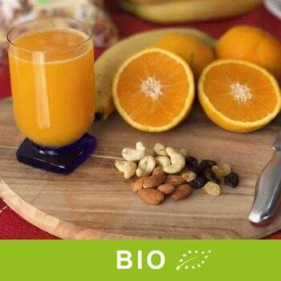
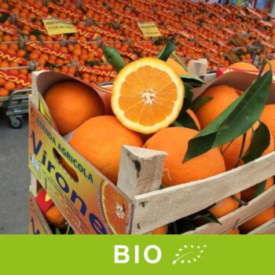
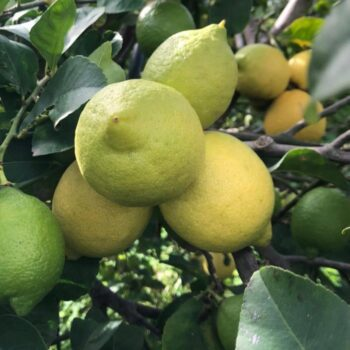
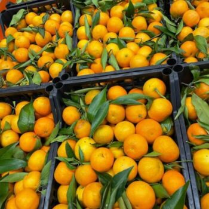
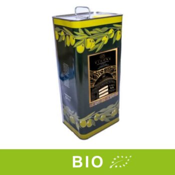
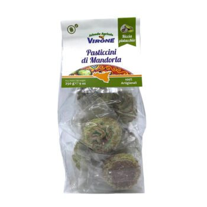
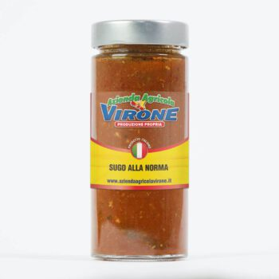

Ribera (AG), Sicilia · da oltre tre generazioni
Arance di Ribera, dall'albero a casa tua in 48 ore.
Agrumi coltivati senza prodotti chimici nei terreni della famiglia Virone. Casse da 10 kg a partire da 25,90 €, spedizione inclusa.
Agrumi spediti lunedì e martedì · consegna in 24/48 ore
Casse di agrumi gratisspedizione inclusa nel prezzo
24/48 oreagrumi spediti lunedì e martedì
Paghi come vuoicarta, PayPal, bonifico, Amazon Pay, contrassegno (+5 €)
Ordini anche al telefonoo su WhatsApp, lun–sab 9–18
In evidenza
I più scelti della stagione

PreordineArance W. Navel BIO da spremuta – cassa 10 kg25,90 €Spedizione gratuita
PreordineArance W. Navel BIO da tavola – cassa 10 kg25,90 €Spedizione gratuita
PreordineLimoni Primofiore – cassa 10 kg31,90 €Spedizione gratuita
PreordineClementine senza semi – cassa 10 kg32,90 €Spedizione gratuita
−20% olio nuovo 26/27Olio extravergine BIO – latta 3 L47,90 €
Paste di mandorla al pistacchio – 250 g7,50 €
Sugo alla norma4,90 €Reparti
Dalla campagna di Ribera alla dispensa


Chi siamo
Tre generazioni di agrumi a Ribera
Gaetano, Liborio e Alessandro hanno imparato a raccogliere arance e olive con il nonno e con il padre Paolo, nei terreni di famiglia in Contrada Donna Vanna. Oggi, oltre agli agrumi, preparano olio, sughi, patè e dolci di produzione propria.
La nostra storiaDicono di noi
Le parole dei clienti
Arance spaziali! Prodotti di ottima qualità! Complimenti!Roberta C. · recensione pubblicata sul sito
Prodotti di qualità assoluta e personale gentile e soprattutto corretto. Avanti cosìEmanuele C. · recensione pubblicata sul sito
Magnifico qualità frutta verdura buonissimi più i mitici prodotti della Sicilia merita tantoBeatrice G. · recensione pubblicata sul sito